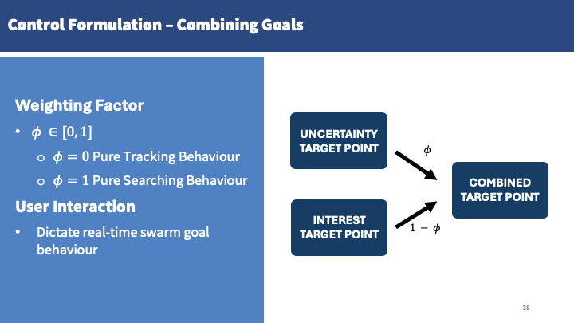
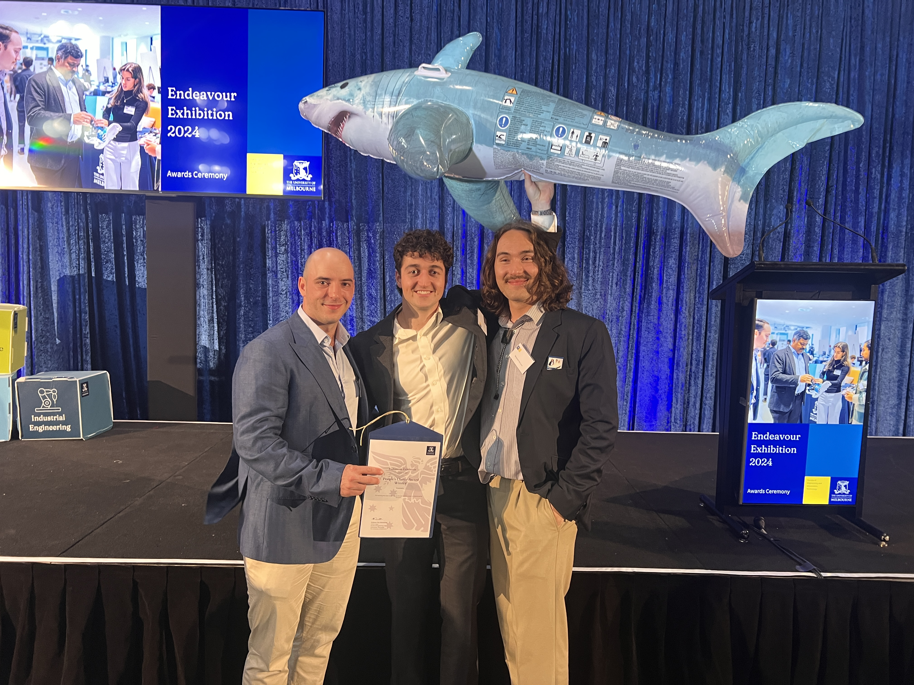
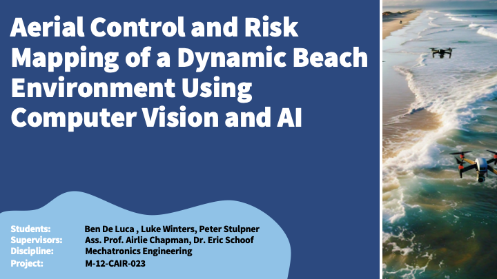

Multiple drones autonomously patrol a beach, they use a Machine Learning model to detect common beach hazards such as sharks, rip-currents and swimmers. Hazard locations and human Surf-Life-Saver (SLS) input is used in Multi-Agent Control Theory to optimally path the drones based on SLS input - assisting with emergency response and coverage.
Proof-of-concept drone patrol network made in collaboration with the SharkSmart Drone Trial Surf-Life Savers members.
Project Demo
Asset Labels:
- Pink Squares – Drone Camera Field of View (FoV)
- Green Circle – Human Swimmer outline
- Red Circles – Shark outline
Mapping Labels:
- Orange – Uncertainty Regions
- Red Gaussians – Interest Regions (Manually dropped with human input)
Side Bar :
Spawners: Can spawn in humans, sharks, rocks and patrolling drones.
Importance: Adjust the uncertainty and interest metrics to influence drone pathing
What Surf Life Savers See
In this video when a shark is detected, it shows the camera in red, and automatically switches to that drones video feed.
All the drone views are streamed to monitor(s) in the SLS tower, when detections are made it sends an alert, so they can review the appropriate camera, and make decisions based on this information. E.g. A shark is spotted by a patrolling drone, the life-saver can verify this and receive continuosu location updates from the drone.
High-Level System Overview
Aims and Objectives:
- Develop an autonomous system to patrol Dynamic Envionments for items of interest using CV and multiple UAVs
- Construct a Proof of Concept using high-fidelity beach simulation for data collection and testing
- Tailor the output and desired swarm behaviour to the needs of the Australian Surf-Lifesavers

Project Used 3 Components:
- Simulation: Proof of Concept Beach Environment
- Machine Learningn: Data Collection and Hazard Detection
- Multi-Agent Control Theory: Optimal Drone Pathing The System allows multiple drones to autonomously patrol a beach, we desigend the ML pipeline to collect training data using a drone sweep to train a custom shark, human and rip detection model.
The video above shows how the drones patrol behaviour can altered: Either following hazards or exploring based on how the ‘importance’ sliders are adjusted.
The model supports up to 5 autonomous drones at the same time, and the behvaiour can be explored by experimenting with the sliders.
This was implemented so that SLS could tune the design, preferencing hazards they deem more important (e.g. following a shark) or instructing the drone to explore new areas, by manually dropping interest points.
System intended as an extension to the already in-operation SharkSmart Drone trail in NSW and Queensland to help reduce emergency response time, provide critical information to live-savers and increase their coverage capabilities.
Multi-Agent Control Highlights
Unique application of tunable Interest and Uncertainty to influence drone pathing.
Uncertainty
- Blue - Green: shows linearly increasing uncertainty function. Drones are driven to explore uncertain areas. The drone FOV (underneath the drone) is 0 Uncertainty. Inversse importance function (further away). Encourages drones to explore the area around itself, that is the least recently seen.
Interest
- Red - White: Particular points drones are driven to explore. (These are created from hazard detections e.g. spotting a shark)
Weighed(Uncertainy) + Weighted(Interest) = Drone Path
Search Area and Partitions

Machine Learning Highlights
Data Collection - Simulation View
Shows the drone sweep path with full density scene with as many assets as possible: Sharks, humans, rocks, rips currents.
Data Collection - Drone View
Drone view during the data collection, can see the automated object detection labels and bounding boxes. Created Pipeline, code that automatically formats the output for YoloV8 Training.
Training results

Simulation Highlights


Won the “People’s Choice Award”
We were awarded the People’s Choice Award receiving the most votes out of over 300 Capstone Projects during the Endeavour Exhibition, where we presented to businesses, academics and relatives of Capstone students.
Full Presentation Slides
Our Full Final Presentation Slides can be seen below. If you would like even more detail on the project, contact us as we will send you our full project report.
